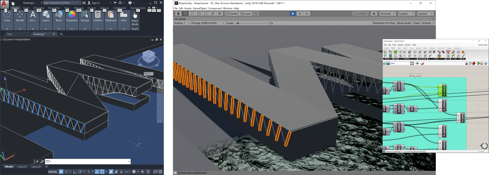
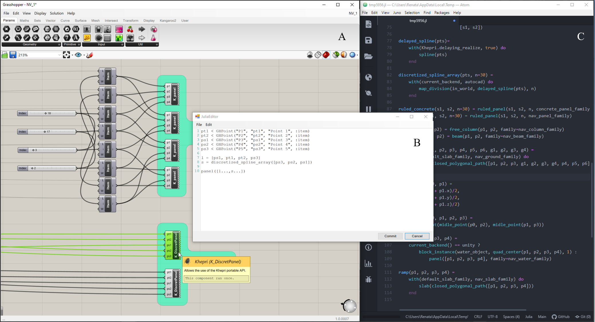
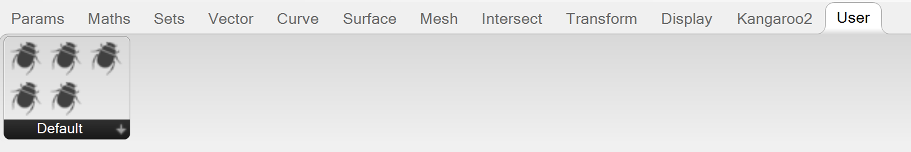

KHEPRI.GH
About the project
Algorithmic approaches are currently being introduced in many areas of
human activity and architecture is no exception. However, designing with
algorithms is a foreign concept to many and the inadequacy of current
programming environments creates a barrier to the generalized adoption of
Algorithmic Design (AD). The Khepri.gh project aims to provide architects
with a programming tool they feel comfortable with, while allowing them to
fully benefit from AD's advantages in the creation of complex architectural
models.
Khepri.gh is a hybrid solution that combines Grasshopper, a visual
programming environment, with Khepri, a flexible and scalable textual
programming tool. Khepri.gh establishes a bridge between the visual and the
textual paradigm, offering its users the best of both worlds while providing
an extra set of advantages, including portability among CAD, BIM, and
analysis tools.
Tutorial presented at the 2020 eCAADe Conference
Implementation and Features
Khepri.gh's implementation is in many ways similar to Grasshopper's currently available textual scripting editors: (A) users drag a blank Khepri component onto the canvas, (B) open up the editor box by double-clicking a component and develop Julia code within; (C) they can then save the new components onto a dedicated tab.
However, while Grasshopper's C\#, VB, and Python scripting editors only provide the features of each programming language unless other libraries are loaded, our implementation not only integrates the Julia language but also the Khepri programming tool from the start. This means, that besides the language primitives, users have access to the modeling primitives available in Khepri, which are transversal to the multiple backends.
Traceability
Traceability entails the identification of which parts of the model correspond to which parts of the program, and vice-versa, a crucial correlation to understand, maintain, and debug the program. Khepri.gh maintains Grasshopper's unidirectional traceability, relating program components to model elements but across multiple backends.
Immediate Feedback
Immediate feedback is the ability to re-compute changes to the program's input or to the program itself in (near) real time, allowing designers to easily understand the program's behavior. Grasshopper immediately updates the geometry upon adding/changing components, Boolean toggles or sliders. Khepri.gh extends this feature to the various backends but performance must be taken into consideration when dealing with complex models. Scale is already an issue for Grasshopper's optimized preview mode (i.e., non-baked geometry); even more so for Khepri.gh, which has to generate the geometry in the backends, a somewhat equivalent process to baking. This process is considerably faster in more performative backends, such as game engines, or using CAD tool's more performative view options, such as wireframe models.
Code editing options
Khepri.gh supports different code editing options. In the visual programming environment, the user can (A) manipulate existing Grasshopper components and (B) create new Khepri components, each one representing a parcel of code, using the textual programming editor available within Grasshopper. However, for more lengthier components, (C) the code can also be accessed in a textual programming editor, such as Atom by right clicking a component and choosing the ‘Khepri code' option.
No Repetition
Following Grasshopper's native structure, VB, C\# or Python components
motivate the construction of standalone components which both implement and
execute operations. When reusing such components, the code is essentially
duplicated and further changes to that structure must be performed in all
similar components. Textual programming follows a different logic, where
repetition is avoided at all costs for logic and organizational purposes.
This makes the code structure more comprehensible and manageable, sparing
the user the time-consuming and error-prone task of maintaining several
versions of the same functionality.
Khepri.gh follows the textual logic in this issue, introducing a
fundamental separation between function definitions and function calls.
All components on canvas are processed on demand, with or without
inputs, with or without specific modeling instructions. Users may gather
function definitions, in one or more components, that can be used in all
the others that call them, thus eliminating repeated definitions. When
the user edits a definition component, the changes will have automatic
repercussions in any other components dependent upon this one.
Complexity
The scalability issue inherent to visual programming languages affects
many of the features that make these systems so appealing to users in
earlier stages: both immediate feedback and program readability are
compromised as complexity increases. For the first issue, Grasshopper
cleverly offers a solution unsurprisingly inspired in the way textual
programming languages deal with geometry generation: inputting numbers
directly onto sliders instead of dragging them, or even disabling the solver
as we edit the program, thus significantly reducing the number of times the
model is recomputed.
For the second problem, the most obvious solution is
abstraction: the possibility to encapsulate complex computations in much
simpler program structures, such as recursive and iterative first-order or
higher-order functions. These mechanisms allow the development of more
complex programs without resorting to the repetition of instructions.
However, most visual programming languages, including Grasshopper, do not
(directly) support these functionalities. Since Khepri.gh is built on top of
the Julia language, any Julia functionality can be used from Grasshopper as
well, meaning that the data that flows between components includes not only
basic data structures, such as numbers and positions, but also functions,
arrays, tuples, dictionaries, etc., and arbitrary combinations of these.
Installation Instructions
✔ Download the relevant files.
You should have 4 files as shown in the image.
✔ Make sure the files are unblocked: rigth click > properties >
unblock.
✔ Drag the plug-ins onto Grasshopper's Component Folder:
in Grasshopper open File > Special Folders > Components
Folder or
in Windows's go to C:\Users\<user
name>\AppData\Roaming\Grasshopper\Libraries
✔ Khepri's basic component should appear in Grasshopper's
Math tab. Look for Khepri's logo.
Basic Use Instructions
Create Khepri components
Go to Math tab > Script and drag the bug (Khepri icon) onto the
canvas and double click it to edit.
Alternatively, double click the
canvas and use the search menu to find Khepri.
Save Khepri components
Go to File > Create User Object, then select the component you want to save. You may change the name, nickname, description, and icon if you want. Saved components will be available in the User tab.
Symbology within components
< is used to define component's input variables
> is used to define the component's output variables
= is used to define variables within the component
much like in Julia
Anything to the left of these symbols will be interpreted by
Julia as variable names, which can be used only within the scope of the
particular component they are defined in (exception made to the
Definitions Component, which we will be explained later on).
To the right of the symbol, Khepri.gh expects you to provide a
TypeFunction with the information required to identify (1) the
type of data being handled and (2) the information Grasshopper needs on
the names and descriptions attributed to each of the component's inputs
and outputs.
Note: If you intend to output a value/expression that is not a
variable within the component, you can directly provide the corresponding
value/expression to the output symbol. You may also use
_ before the output symbol, thus providing no explicit
expression for the output. This will be considered an anonymous variable
and the component will output the result of the last computation made
within it. Only works properly for one output.
Abstract examples:
variable_a < VariableType() is an input.
variable_b = <variable value/expression> can be used
within the component.
(variable_c,variable_d) = <variable value(s)/expression(s)>
exemplifies a definition using tuples.
variable_b > VariableType() is an output.
<variable value/expression> > VariableType() is a
direct output with no variable name associated to it within the
component.
_ > VariableType() is an output with no expression provided
directly. The result of the last computation made within the component
will be outputted.
Typical Component Layout
# Title
# v < Type("Input", "I", "I Parameter", default)
a < Number()
b < Number()
_ > Number()
sqrt(a^2 + b^2)
The first line will be used as the component's title by default. You may
ignore this and edit the title later by double clicking on the component and
changing the name field. If you want to define the title in the editor using the first line, do
not forget to comment it (using #) since within the component all characters
are read as code.

v exemplifies the information the user is supposed to provide
to the TypeFunction: name, nickname, description, and default value.
None of these arguments are mandatory. If no arguments are provided, the
system will use defaults for everything. If only the name argument is
provided, the system will infer the nickname (capitalized first letter of
the name), the description ("<nickname> parameter"), and the default
value, as exemplified below with parameters a, b, and _. Users may also
provide only one numeric/default argument corresponding to the
initialization value.
The order of input/output is irrelevant. Use normal Julia programming order. Note b's imperative assignment in the following example.

Examples for TypeFunction arguments:
p < Point("Sphere Center", "P", "P defines the center of the
sphere")
pts > Points("pts_down_curve", "PsC", "List of GH locations for Curve")
Supported Types
Type Function:
Type(name, Nickname, Description, Default)
Items:
Integer(name, Nickname=name[1:1], Description=name, Default=0)
Number(name, Nickname=name[1:1], Description=name, Default=0)
Point(name, Nickname=name[1:1], Description=name, Default=u0())
Vector(name, Nickname=name[1:1], Description=name, Default=vx(1))
Boolean(name, Nickname=name[1:1], Description=name, Default=true)
String(name, Nickname=name[1:1], Description=name, Default="")
Path(name, Nickname=name[1:1], Description=name, Default="")
Any(name, Nickname=name[1:1], Description=name, Default=nothing)
JL(name, Nickname=name[1:1], Description=name, Default=nothing)
Eval(name, Nickname=name[1:1], Description=name, Default="")
Lists:
Integers(name, Nickname=name[1:1], Description=name, Default=[])
Numbers(name, Nickname=name[1:1], Description=name, Default=[])
Points(name, Nickname=name[1:1], Description=name, Default=[])
Vectors(name, Nickname=name[1:1], Description=name, Default=[])
Booleans(name, Nickname=name[1:1], Description=name, Default=[])
Strings(name, Nickname=name[1:1], Description=name, Default=[])
Paths(name, Nickname=name[1:1], Description=name, Default=[])
Many(name, Nickname=name[1:1], Description=name, Default=[])
JLs(name, Nickname=name[1:1], Description=name, Default=[])
Evals(name, Nickname=name[1:1], Description=name, Default=[])
Lists of Lists (Trees):
Integerss(name, Nickname=name[1:1], Description=name, Default=[])
Numberss(name, Nickname=name[1:1], Description=name, Default=[])
Pointss(name, Nickname=name[1:1], Description=name, Default=[])
Vectorss(name, Nickname=name[1:1], Description=name, Default=[])
Booleanss(name, Nickname=name[1:1], Description=name, Default=[])
Stringss(name, Nickname=name[1:1], Description=name, Default=[])
Pathss(name, Nickname=name[1:1], Description=name, Default=[])
Manies(name, Nickname=name[1:1], Description=name, Default=[])
JLss(name, Nickname=name[1:1], Description=name, Default=[])
Evalss(name, Nickname=name[1:1], Description=name, Default=[])
Types explained
Number(s(s)), Integer(s(s)), Point(s(s)), Vector(s(s)), String(s(s)), Boolean(s(s)),
Path(s(s))
For the 7 basic types there is a direct correspondence between Julia and
Grasshopper. This means you can input and output them at will, interchanging
data between the two programming languages, whilst Khepri automatically
converts from one end to the other as needed.
Eval(s(s))
Eval deals with any Julia expression provided as a sting – these may come
from a Grasshopper panel (no quotation marks needed! The panel produces a
string) or from another Khepri component (with eval/evals as an output).
Eval evaluates the given expression as Julia code. The result will be a
value in Julia.
Any/Many/Manies
To output the result of Julia calculation within a Khepri component for
Grasshopper, you can use any of 7 basic types: the output can be used to
feed Grasshopper components as Khepri covers everything in the background.
If you do not know what the result of the computation will be yet (could be
one of multiple types depending on the input), choose the Any/Many type
instead. Khepri will dynamically try to match the type of the result to any
of the 7 basic types. If it fails (meaning, none of the types apply) it will
simply return a pointer (much like the result of the JL type).
Attention: this type cannot be initialized within the component, meaning it
cannot have a default.
JL(s(s))
Data types only Julia can process. There is no correspondent representation
in Grasshopper. Hence, Khepri will return a pointer (memory). You may
visualize the pointer using a Grasshopper panel, but you may not operate on
it using Grasshopper components, only Khepri's. Examples include functions,
shapes, etc.
⚠ Notes for debugging
• Code written in components is more efficient than using panels and Eval types (although the latter is more visually appealing), because everything is compiled on a first read. Panels being inputted onto an Eval must recompile all the time. this is a time vs. beauty tradeoff.
Definitions Component
Components with no inputs or outputs are treated differently (like text files) – use them for definitions only, no geometry generation. This one forces the recomputation of all the others, because it does not know which other components depend on it. The other types of components only force recomputation on their node/wire chain.
General Examples
Two direct outputs with no associated variable name:

Plural outputs (lists):

Eval:
Evals - use Grasshopper's multiple data panels for multiple Eval entries, i.e. plural outputs/lists:

Strings:
Many/Manies:

{kind=link}
{kind=link}
{kind=link}
{kind=link}
{kind=link}
{kind=link}
{kind=link}
{kind=link}
{kind=link}
{kind=link}
{kind=link}
{kind=link}
{kind=link}
Jls:

Tree decomposition examples using List Types only:
{kind=link}
{kind=link}
{kind=link}
{kind=link}
The previous cases can be handled in a much simpler way using Tree Types (lists of lists):
{kind=link}